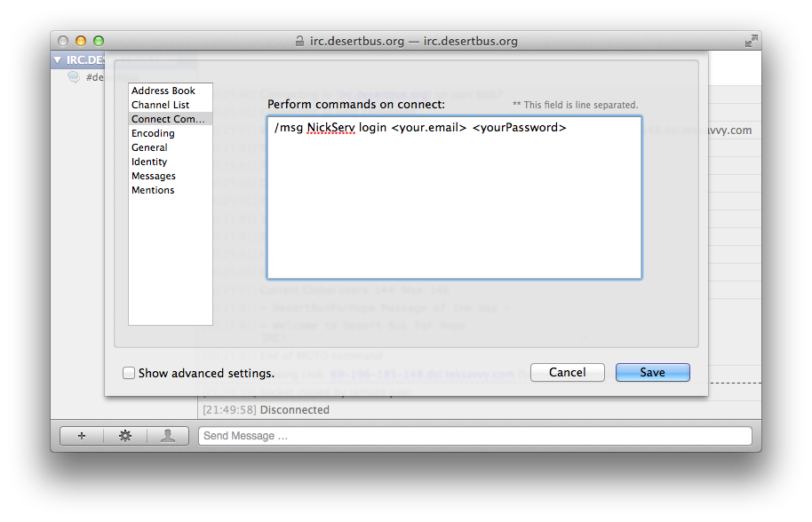

Using Textual to Access the Desert Bus Chat
Textual is an IRC client for OS X which is simple and easy to use. You can purchase it from the App Store or download a trial from the developer's site. The current version at the moment of writing 3.2.3.
- Initial Setup
- Connecting Automatically
- Identifying Yourself
- Hiding Joins and Parts
- Connecting Securely
Setting Up Textual For The First Time

Textual is incredibly easy to get going. If you're a new user, when you first start Textual, it will prompt you to enter a new server to connect to.

IRC server: For the Desert Bus Chat, make sure this is set to irc.desertbus.org.
Nickname: Enter whatever name you'd like to use in the chat. If you have a donor account, you'll be able to reserve this name for later, and no one else will be able to use it when you disconnect.
Channels: You don't need to worry about this, because the Desert Bus IRC server will automatically connect you to the main room, #desertbus.
Connect on launch If you'd like to save yourself some time, and connect to the Desert Bus Chat whenever you start Textual, leave this option checked (it's on by default).
Once you've filled in all these fields, the Start Chatting button should become enabled, so go ahead and click that.

You should see Textual connect to the server. Once it's connected, click on the arrow next to the server's name in the sidebar to expand it. If everything went correctly, you should see #desertbus there.

Connecting Automatically on Startup
If you didn't choose to let Textual automatically connect when it launches, or you want to turn off the automatic connection, you can change the settings on the main configuration screen for the Desert Bus server. Simply check or uncheck Connect when Textual opens to change this option.

Automatically Identifying Yourself to the Server
If you have a donor account (and you should! How else will you bid on the live auctions? Or get your name in for a chance to win prizes from the donation challenges?), you can link your account with your nickname in chat. The easiest method for this in Textual is to use its Connect Commands. Open the server configuration screen by hitting Cmd+U. Click on the Connect Commands configuration item on the left, and fill in the box labelled Perform commands on connect: with the command below, replacing the email address and password with your donor account ones.
/msg NickServ login <email address> <password>
Hiding Join and Part Messages in Textual
There are a lot of people in the Desert Bus Chat during the marathon, so there are also a lot of people joining and leaving. Normally you might want to know who just left the channel you're in, but it can quickly become overwhelming during Desert Bus.
To disable these messages, you'll need to change the option in the channel configuration screen. To get there, click on #desertbus in the sidebar, then hit Cmd+I, or the gear icon in the lower left, then Channel Properties.

Once you've reached the options for the channel, the join/part messages can be easily disabled by checking Disable join, part, and quit activity and hitting Save.
Connecting to Desert Bus Chat Securely
Making Textual connect to the Desert Bus server with SSL is also very simple. Press Cmd+U to open the server configuration window, and you should automatically be focused on General configuration. To enable SSL, change the Port: to 6697, and check the Use SSL box. Make sure to Save. Re-connect to the server and you should now be connected over SSL.